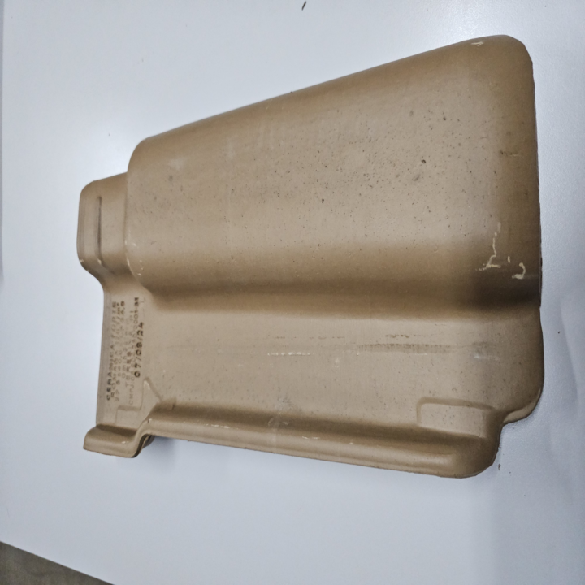
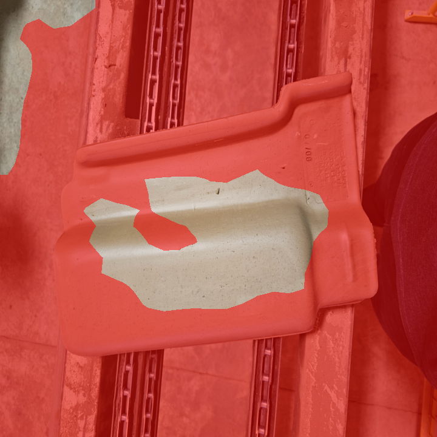
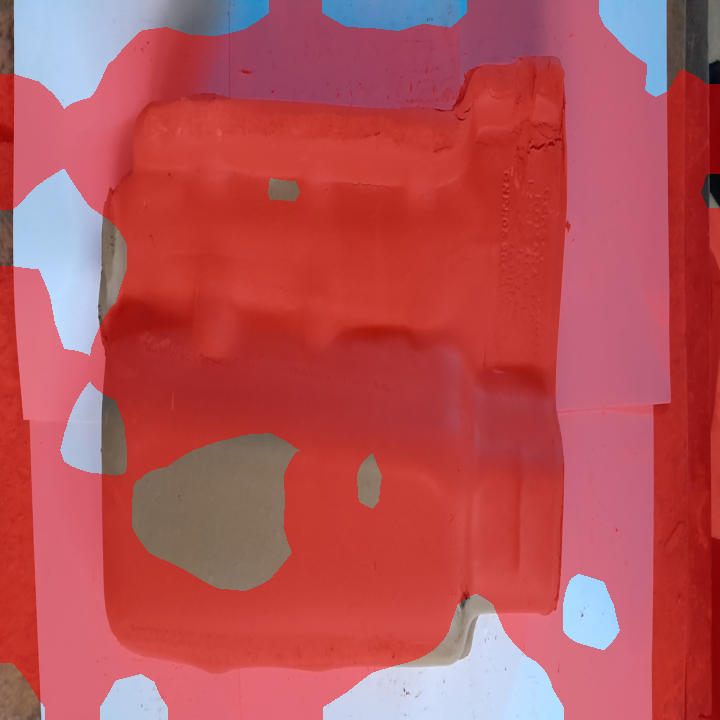

另将首轮已经公开的40张作为回归：40/40判对。两组共80张的FPGA评分及720×720输入掩膜全部与冻结整数参考一致。这里的“新测试”仅指未用于本轮标定、未在此前测试中使用的照片文件，不能称作实体工件独立盲测。
本轮只更新良品特征参照与良品标定阈值，没有训练新的CNN、修改Verilog/HLS内核、提高频率或增加模型包大小。
另将首轮已经公开的40张作为回归：40/40判对。两组共80张的FPGA评分及720×720输入掩膜全部与冻结整数参考一致。这里的“新测试”仅指未用于本轮标定、未在此前测试中使用的照片文件，不能称作实体工件独立盲测。
本轮只更新良品特征参照与良品标定阈值，没有训练新的CNN、修改Verilog/HLS内核、提高频率或增加模型包大小。
该公开数据实际为陶瓦实拍，实体样本数量有限，摆放、背景和光照有变化。第二轮仍有1张良品误报；20张缺陷全检出也不代表未知缺陷全检出。实验候选不获得自动放行资格，稳定工作站继续使用原有已验证开发样例配置。
| 配置及数据组 | 良品误报 | 缺陷检出 | 证据性质 |
|---|---|---|---|
| 首轮：32张良品参照＋12张良品标定；测试A | 8/20 | 20/20 | 40张实板逐值一致；失败结果保留 |
| 第二轮：128张良品参照＋64张良品标定；新测试B | 1/20 | 20/20 | 40张实板逐值一致；与A文件互斥 |
| 第二轮配置再测A | 0/20 | 20/20 | 已公开开发回归，不算新的独立验证 |
冻结的旧纹理配置在A、B的同输入离线整数比较中均误报20/20；该项是离线对照，不能冒充旧配置在这80张上的实板测量。V194另外40张原图的实板失败另行完整保留。
A与B是不同测试组，不能把8→1解释成同一组图片上的逐项变化。第二轮扩大良品覆盖是看到首轮失败后的开发决策；B在新参照生成前按哈希规则锁定，不按测试缺陷的结果调整。
冻结MobileNetV2整数特征、激活尺度、投影和输入归一化。仅从良品图提取正常特征，确定性最远点选择1024个64维参照中心；另组良品的最大评分加1作为阈值。模型导出后先封存SHA256与阈值，再评估测试图片。
两轮模型均751760字节，与基线相同。二进制逐字节核对仅允许阈值字段及131072字节参照区改变。BIT/XSA、100MHz时钟和FPGA资源配置完全沿用基线；为每组新模型CRC重新编译匹配的ARM传输固件，没有伪造身份。
PC做离线标定与实验后数值核对。部署时的预处理、CNN、投影、最近邻距离、平滑、阈值比较及掩膜全在PL。此轮使用网口输入，ARM只传输与启动；没有宣称本候选已经通过双ARM暂停的连续HDMI验收。



红色区域是FPGA的粗粒度异常掩膜，不是人工缺陷标注，也不是精细裂纹轮廓。第二轮80张平均PL耗时见原始汇总；不把固定图片或核内耗时当作整线放行速度。
来源：ceramics-defects-detection 作者发布页，DOI10.17632/47x6jdbr5j.1，CC BY4.0；Lucileide Aquino do Nascimento、Otilio Paulo、Gilvan Moreira da Paz、Micherlane Rodrigues Machado da Silva。只使用原图目录，不使用增强图冒充实拍。
作者原图逐张校验公布SHA256。因TCP当前限制，输入准备阶段明确将整图离线双线性缩为720×720 PNG；保留原图、原图哈希和衍生图哈希。这是修改后的实拍输入，不是原始高分辨率无损测试，也不与WPF/HDMI显示缩放宣称像素相同。报告缩略图及覆盖图均由上述实拍衍生，保留原始来源许可。
训练、标定、测试原图哈希互斥，A/B及V194的测试文件互斥；但连拍和同一实体工件可能跨组，不能推导工件级独立泛化。继承的MVTec投影仍保留原许可限制。
第二轮预先冻结计划 · 全部输入及来源哈希 · 模型封存与变更范围 · 首轮实板失败 · 第二轮80张全部结果 · 环境版本 · 证据校验值
为目标地砖花色建立同视角、同光照、固定检测区域的良品参照，补有来源的真实地砖良品与缺陷，并按实体工件分组验证。对剩余误报做有标注的背景/边缘与表面纹理分析；不能只抬高阈值，不能删除失败样本。继续保留停驻检测及人工确认流程，暂不追逐10FPS。
真实整机及板卡照片、本人签署授权书、最终视频与最终提交仍待补齐。当前保存的是工程原型和标定实验，不是最终比赛验收声明。稳定演示工作站